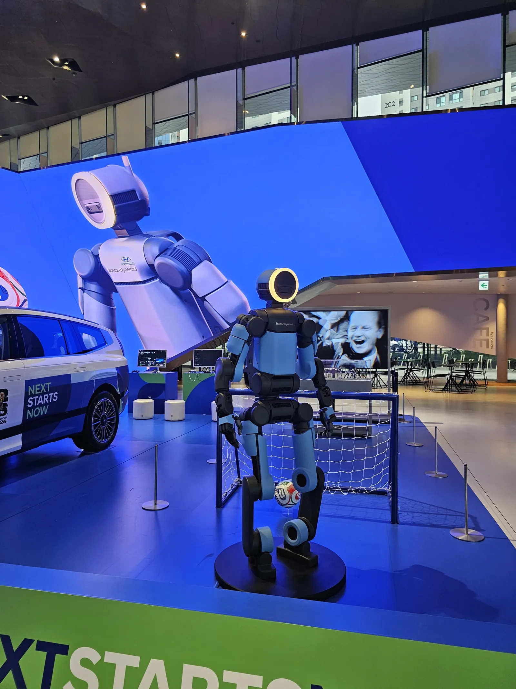
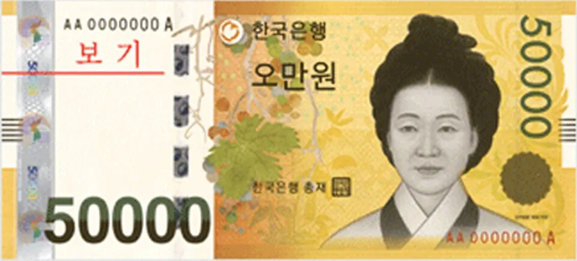
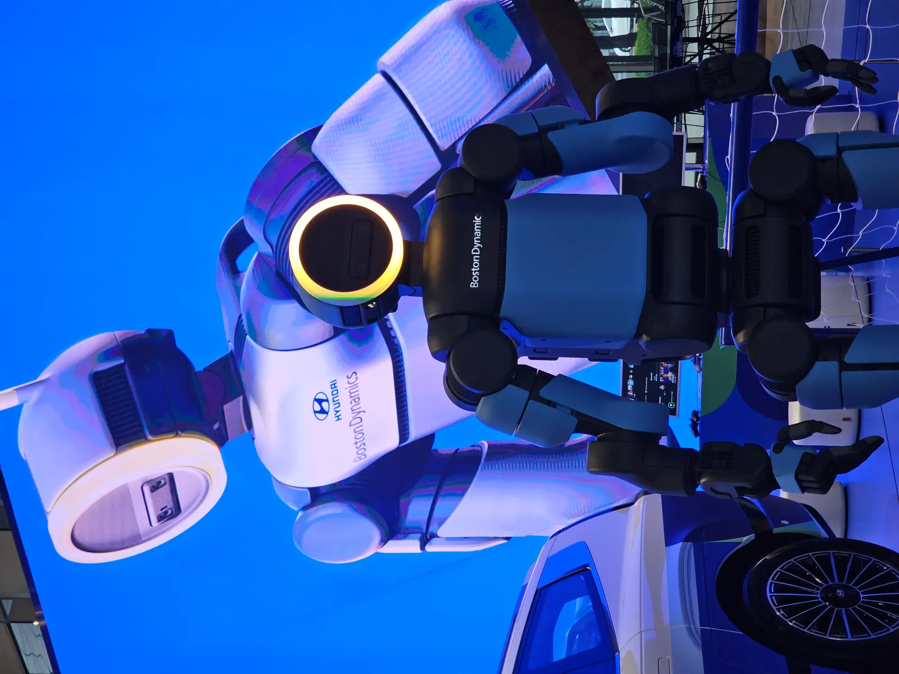

▲ 보스턴다이내믹스 휴머노이드 로봇 아틀라스. 로봇·자율주행 기대감이 기아 주가 급등의 배경으로 꼽혔다 ⓒ Wikimedia Commons
하루 만에 12.70%, 금액으로는 2만2,100원. 2026년 2월 25일 기아 주가가 이렇게 급등하며 19만6,100원에 거래를 마쳤다. 장중에는 19만9,900원까지 치솟아 52주 신고가를 새로 썼다.
자동차 판매 실적 발표도, 배당 확대 소식도 아니었다. 이날 기아 주가를 밀어 올린 건 로봇과 자율주행이라는, 언뜻 완성차 회사와 거리가 멀어 보이는 키워드였다. 무슨 일이 있었는지 짚어봤다.
1. 2월 25일, 정확히 무슨 일이 있었나
기아 주가는 2026년 2월 25일 전 거래일 대비 12.70%(2만2,100원) 오른 19만6,100원에 마감했다. 장중에는 19만9,900원까지 오르며 52주 신고가를 새로 썼다. 하루 등락률로는 이례적으로 큰 폭이다.
| 일자 | 종가 | 등락률 | 비고 |
|---|---|---|---|
| 2월 25일 | 19만6,100원 | +12.70%(+2만2,100원) | 장중 19만9,900원, 52주 신고가 |
| 2월 26일 | 20만6,000원 | +5.5% | 목표주가 상향 발표 겹침 |
같은 기간 현대차도 함께 뛰었다. 2월 26일 현대차는 전일 대비 6.47% 오른 60만9,000원에 마감하며 사상 처음 60만원대에 올라섰다. 기아·현대차 동반 급등이라는 점에서 개별 종목 이슈가 아니라 그룹 전체를 관통하는 테마가 작동했음을 보여준다.

▲ 2월 25일 기아 주가는 하루 만에 2만2,100원(12.70%) 급등했다 ⓒ 한국은행
2. 왜 하필 '로봇'이었나 — 아틀라스와 CES 2026
급등의 진원지는 보스턴다이내믹스다. 현대차그룹이 2021년 인수한 이 로봇 회사는 2026년 1월 5일 CES에서 완전 전동화된 신형 휴머노이드 로봇 '아틀라스'의 양산형 모델을 공개했다. 여기에 트럼프 미국 대통령이 휴머노이드 로봇을 전략산업으로 육성하겠다고 밝히면서, 로봇 관련 자산을 보유한 기업들의 가치가 재평가받는 흐름이 증시 전반으로 번졌다.
기아는 이 보스턴다이내믹스 지분을 17.2% 보유하고 있다. 완성차 판매 실적과 별개로, '로봇 회사 지분을 가진 기업'이라는 프레임이 새롭게 부각되면서 주가에 반영되기 시작한 것이다.

▲ 현대차그룹은 보스턴다이내믹스를 2021년 인수했으며, 기아는 이 회사 지분 17.2%를 보유하고 있다 ⓒ Wikimedia Commons
3. 자율주행 자회사 모셔널, 두 번째 재료
로봇 못지않게 언급된 게 자율주행이다. 기아는 현대차그룹의 자율주행 합작법인 모셔널(Motional) 지분 24.25%를 보유하고 있다. 올 하반기 자율주행 관련 모멘텀이 가시화될 것이라는 기대감이 로봇 이슈와 겹치며 상승폭을 키웠다는 분석이다.
KB증권 강성진 애널리스트는 현대차그룹이 전북 새만금에 향후 5년 이상 10조원을 투자해 AI 데이터센터·수소 설비·로봇 생산 시설을 구축하는 계획을 두고 "피지컬 AI 비전을 위한 실질적 실행 단계"라고 평가하며 현대차 목표주가 80만원을 유지했다.
📍 다음날 나온 목표주가 상향 — 근거는?
2월 26일 한화투자증권은 기아 목표주가를 18만원에서 24만원으로 상향하며 매수 의견을 냈다. 근거로는 ①보스턴다이내믹스 지분 17.2%·모셔널 지분 24.25%에 대한 AI·로보틱스 가치 재평가, ②미국 시장 1월 소매판매에서 주요 완성차 업체 중 유일하게 두 자릿수(13.1%) 증가를 기록한 점을 들었다. 리포트 시점 기준 기아 전일 종가는 19만6,100원이었다.
✅ 이 급등을 볼 때 유의할 점
· 12.70% 급등은 실적이 아니라 로봇·자율주행 자산에 대한 기대감(테마성 재료)에 기반한 상승이라는 점을 구분해서 봐야 한다
· 아틀라스의 양산 본격화는 2028년으로 예정돼 있어, 실제 로봇 사업의 매출 기여는 아직 시간이 필요하다
· 목표주가 상향은 특정 증권사(한화투자증권)의 리포트로, 시장 전체의 합의된 전망은 아니다
4. 앞으로 지켜볼 변수
단기 재료로 촉발된 급등이 실제 밸류에이션 재평가로 이어질지는 좀 더 지켜볼 필요가 있다. 로봇·자율주행 사업의 구체적인 수익화 로드맵이 얼마나 시장에 설득력 있게 제시되느냐가 관건이 될 전망이다.
실제로 이 우려는 이후 현실화됐다. 한국경제 보도에 따르면 3월 3일부터 5월 27일까지 기아 주가는 18만2,300원에서 16만4,700원으로 9.7% 하락한 반면, 같은 기간 현대차는 14.5% 상승했고 현대모비스(+46.9%)·현대오토에버(+71.1%)는 훨씬 가파르게 뛰었다. 증권가는 기아가 현대차보다 보스턴다이내믹스 지분율이 낮아 로봇·AI 신사업 재평가의 수혜가 상대적으로 제한적이었다고 분석했다. 2월 25일의 급등이 로보틱스 테마 전반에 대한 기대감이었을 뿐, 기아 개별 종목의 펀더멘털 개선을 뜻하는 것은 아니었다는 점이 이후 주가 흐름으로 확인된 셈이다.
당시 주가 흐름에 대한 상세 보도는 네이트뉴스 원문에서 확인할 수 있다. 네이트뉴스 원문 바로가기

▲ 자율주행 센서를 탑재한 아이오닉 5 테스트카. 기아는 이 사업을 담당하는 자율주행 합작사 모셔널 지분 24.25%를 보유하고 있다 ⓒ Wikimedia Commons
5. 요약
2026년 2월 25일 기아 주가는 전 거래일 대비 12.70%(2만2,100원) 급등한 19만6,100원에 마감하며 장중 52주 신고가(19만9,900원)를 새로 썼다. 같은 기간 현대차도 6%대 상승하며 사상 첫 60만원대에 진입했다.
급등 배경은 CES 2026에서 공개된 보스턴다이내믹스 휴머노이드 로봇 아틀라스와 자율주행 자회사 모셔널에 대한 재평가였다. 기아는 보스턴다이내믹스 지분 17.2%, 모셔널 지분 24.25%를 보유하고 있다.
이튿날인 2월 26일 한화투자증권이 목표주가를 18만원에서 24만원으로 상향하며 기아는 추가로 5.5% 오른 20만6,000원에 마감했다. 다만 아틀라스의 양산 본격화는 2028년으로, 실제 실적 기여까지는 시간이 필요하다는 점은 유의할 부분이다.
실제로 이후 흐름은 신중론에 무게를 실었다. 3월 3일~5월 27일 기아 주가는 18만2,300원에서 16만4,700원으로 9.7% 밀린 반면 현대차는 14.5% 올랐다. 로봇·AI 신사업에서 현대차 대비 지분율이 낮은 기아가 테마 재평가의 수혜를 상대적으로 덜 받았다는 분석이다.